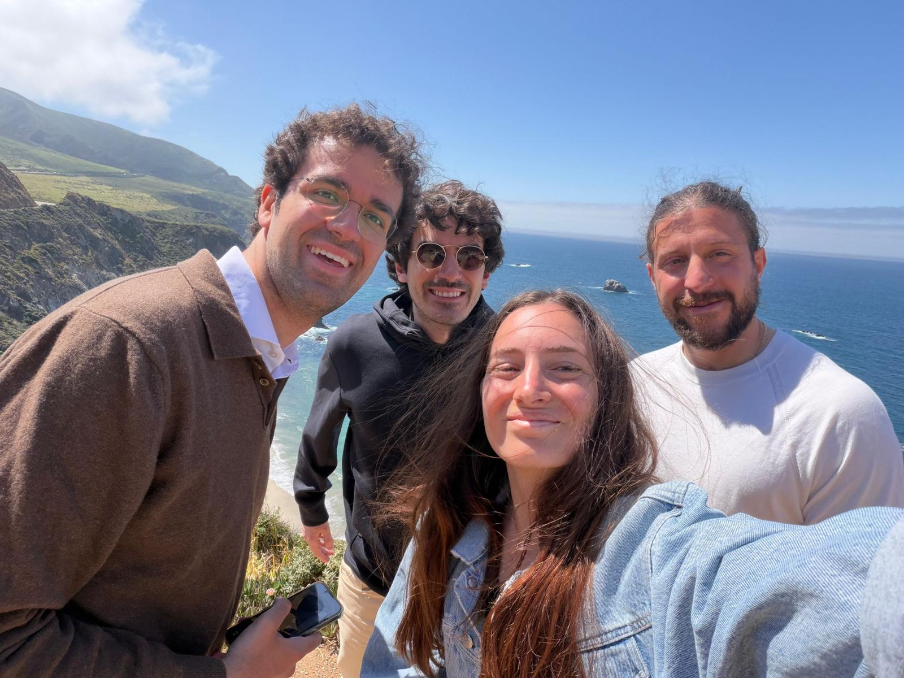
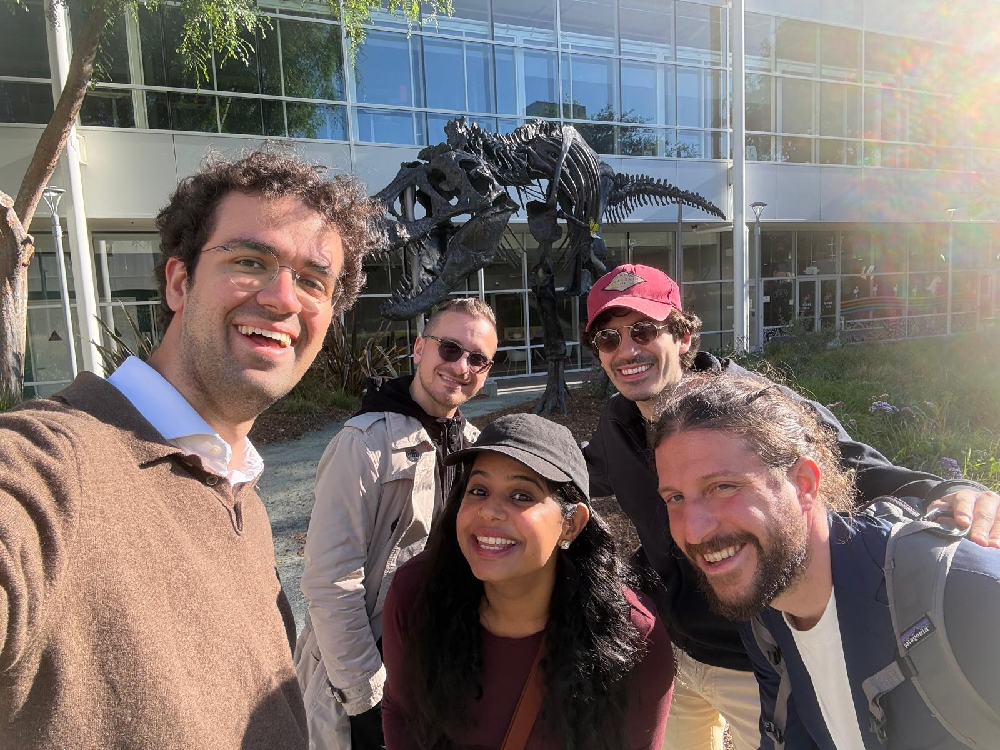
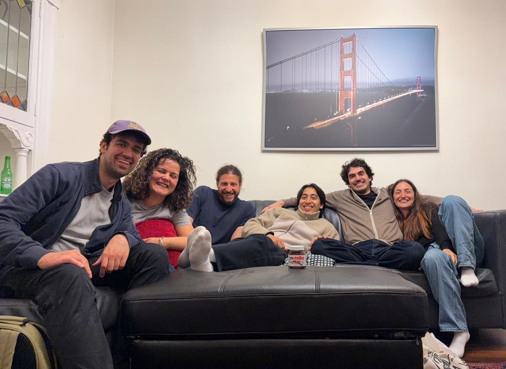
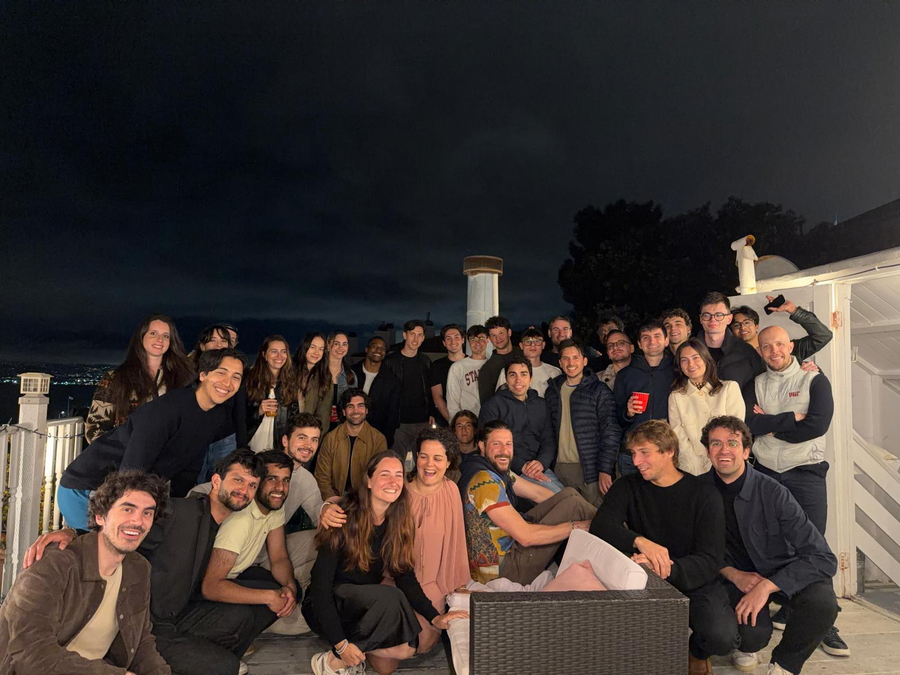
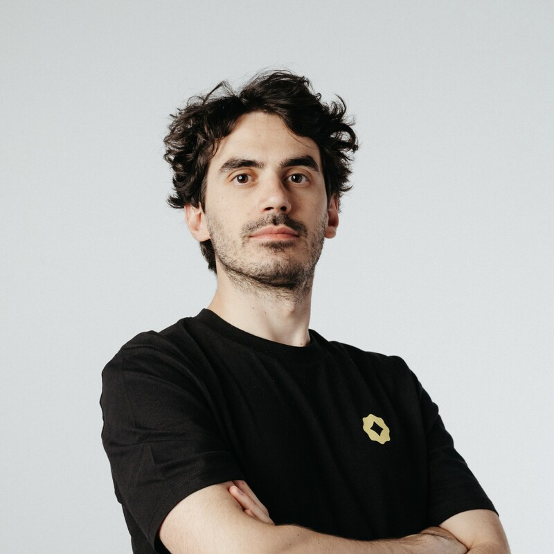
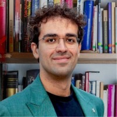
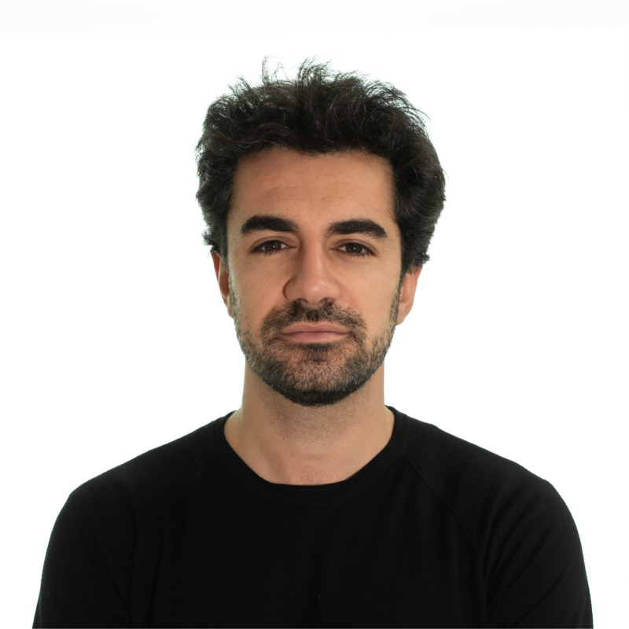
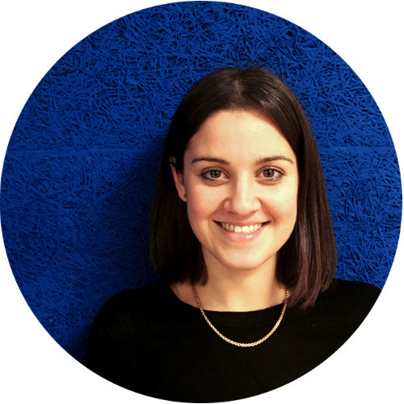
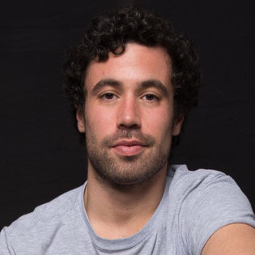
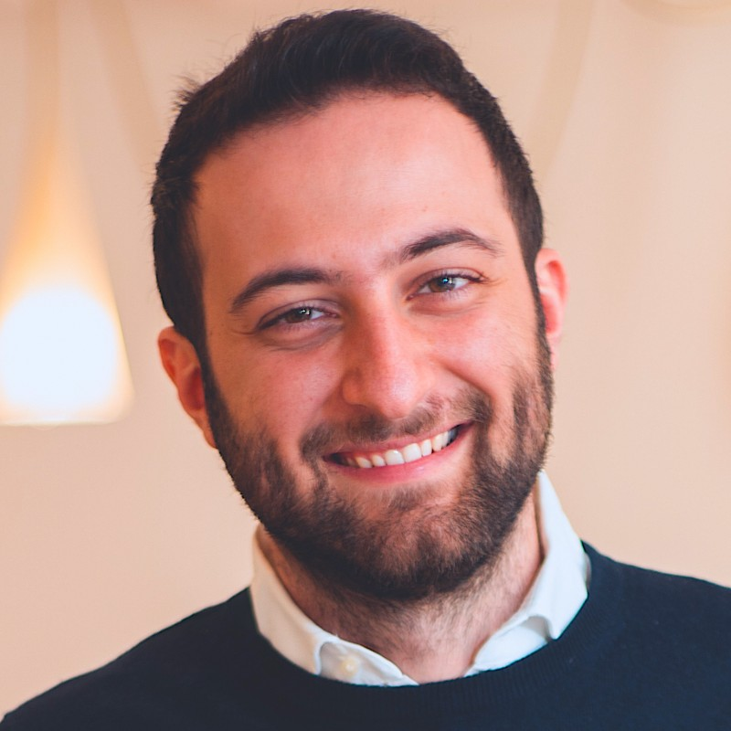

A group of Italian AI entrepreneurs, researchers, and digital creators traveling to China to build lasting bridges between Europe's and Asia's most dynamic AI ecosystems.
We are a group of Italian AI entrepreneurs who regularly travel to San Francisco to meet with leading AI labs, researchers, and founders. We have built strong relationships with the Silicon Valley ecosystem and now we want to do the same with China — the other superpower shaping the future of artificial intelligence. We are genuinely fascinated by what China is building in AI, and we want to see it firsthand: the labs, the products, the people behind the breakthroughs. We plan to bring these stories back to Italy and Europe — sharing what we learn about Chinese innovation through our communities, talks, and content.
AI development is splitting into two distinct ecosystems: the US-led West and China. We believe understanding both is essential for any European leader who wants to build at the frontier.
This is not a conference or a tour. We visit labs, meet researchers, share meals, and build genuine connections with the people behind China's most ambitious AI projects.
We reach thousands of professionals and organizations across Italy and Europe. Everything we learn in China, we bring back — through our communities, events, content, and the companies we advise.




Our group during recent trips to San Francisco — visiting AI labs, meeting founders, and building community.
Six people traveling together, each bringing a different lens to the Chinese AI ecosystem.

Founder and CEO of Yellow Tech, an AI consultancy that has guided 450+ Italian organizations through AI transformation, trained over 25,000 professionals, and deployed AI agents in production for enterprise clients. President of AIFIA (Associazione Italiana Formatori di Intelligenza Artificiale), a network of 190+ certified AI trainers — the largest in Italy. Visits San Francisco quarterly to meet with leading AI labs.
AI Agents & Adoption
Co-founded Wibo at age 21. Today, Wibo is a fast-growing edtech scaleup that partners with 150+ corporates and multinationals — including Unicredit, Huawei, Crédit Agricole, and Amazon — to design how people and AI work together. 14,500+ professionals trained across Italy and abroad. Previously co-founded Officina Magazine at 15, a cultural journalism platform with 60 writers.
AI & Education
Serial entrepreneur operating at the intersection of technology and entertainment. Founded eVentures and co-created Il Pagante, which grew from a viral social media project into a full-fledged entertainment brand with millions of streams and sold-out live events across Italy. Brings a unique perspective on how AI and technology are reshaping creative industries, content production, and the music business.
Music & Entertainment Tech
Management engineer (Politecnico di Milano) and serial entrepreneur. Co-founded UGO, a digital platform that connects families with trained personal assistants to accompany elderly and fragile people to appointments and therapies. Since 2023 she leads Carvoilà, the first Italian company specialized in premium Pick-up & Delivery for the automotive sector — a nationwide network of drivers serving long-term rental companies, carmakers, insurers, dealerships, and body shops across 90+ cities. Builds technology-driven services that make complex operations fast, transparent, and reliable. Based in Milan.
Mobility & Logistics Tech
Computer vision researcher with a PhD from ETH Zurich and over 30 publications at top-tier conferences (CVPR, ICCV, SIGGRAPH), accumulating 13,000+ citations. Spent a decade in research across Disney Research, Adobe, and Meta Reality Labs, working on visual effects, Photoshop, and the Ray-Ban smart glasses. Returned to Italy in 2021 to build and lead the AI team at Bending Spoons. Now exploring a new venture of his own. Based in Milan.
AI Research & Product
Innovation strategist with 13+ years turning ideas into ventures. Former Partner and Head of Innovation at Tree, an open-innovation boutique he helped grow to 30 people before its acquisition by the Spanish group Opinno. Has supported 100+ early-stage startups and 200+ aspiring founders, and designs and runs entrepreneurship and intrapreneurship programs with institutions such as B4i (Bocconi), ESCP, Unicredit, and Italian Chambers of Commerce. Organizer and facilitator of Techstars Startup Weekend since 2016. Lives between Milan and Barcelona.
Innovation & EntrepreneurshipA focused itinerary designed to maximize depth over breadth. Five days in Beijing to meet the research frontier, five days in Shenzhen to see the product innovation layer.
From foundational models (DeepSeek, Zhipu, Moonshot) to product-layer innovation (Shenzhen hardware, consumer AI), we want to map the full ecosystem.
Real conversations over meals with researchers, engineers, and founders who are shaping China's AI future.
As frequent visitors to Silicon Valley, we have deep context on Western AI development. This trip completes the picture with the Chinese perspective.
We want to share what we discover with the Italian and European tech communities — through talks, articles, social media, and conversations with the thousands of professionals and organizations we work with every day.
We are actively building AI products and training thousands of professionals in Europe. We are looking for ideas, partnerships, and inspiration from the Chinese ecosystem.
This is not a reporting trip. We are not journalists and we are not producing media content during the visit. A typical meeting for us is a brief mutual introduction followed by informal, open-ended conversation. We are here to listen, learn, and connect — not to broadcast.